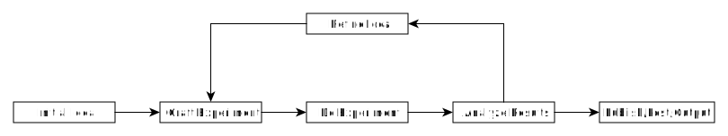
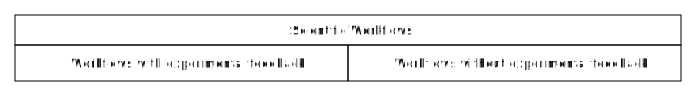
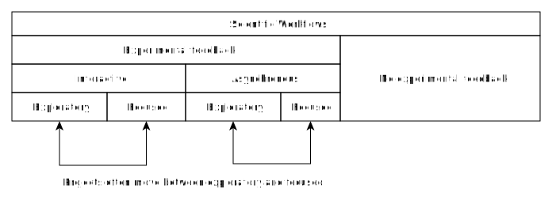

Classifying Scientific Compute Workflows
Dec 16, 2021 16:30 · 1466 words · 7 minute read
Scientists use computers, and not just for typesetting. Lots of experimentation and discovery is done with computers, from modeling climate to predicting material properties to discovering exoplanets. Because computation is applied to such a broad range of questions, the ways it gets used are many and varied. This diversity of application means that tools developed and lessons learned in one domain of scientific compute workflow often don’t generalize to very different domains. On the other hand, many lessons do generalize, but only within classes of problems, and ignoring this means reinventing the wheel.
I think this means we need a language for talking about the different classes of scientific compute. This language would make it clear which lessons can be imported into any given domain, and from where. It would also provide a more nuanced way of talking about the kinds of resources scientific computing needs, rather than the coarse distinction between ‘high-performance compute (HPC)’ and ‘laptop’.
Scientific Method
At a high level, the scientific method looks something like this:
You start with some idea or question. You craft an experiment to test it. You then perform that experiment , get some results, and analyze them. At this stage either you’ve learned all you needed to learn and can produce an output artifact (publication, blog post, etc.) or you’ve learned that your initial idea wasn’t quite right, or your experiment didn’t really answer your question, so you refine my idea and craft a new experiment, looping until you’ve learned something meaningful and useful.
Note that I’m using the word ‘experiment’ very broadly: an experiment here could be a physical experiment in the real world or a numerical simulation based on well-understood physical laws or could even be a particular attempt at modeling already-procured real-world data. The key idea unifying these rather disparate methods is that they provide feedback on the original idea which can be used to either evaluate or refine that idea.
This is not the only way to do science. Science can involve lengthy periods of refining the initial idea without any feedback from experiment or simulation (e.g. in theoretical physics). Sometimes the resulting artifact is just the refined idea, in which case the job of testing the idea with external feedback falls on other scientists.
This is the first classification I want to highlight: on the path from initial idea to output artifact does your science involve feedback from simulations/experiments/models, or does the whole path lie in the minds of you and your collaborators?
The workflows in pure-idea science are so far from the bulk of scientific computation that I’m not going to deal with them here, even though they can still benefit from computers, so the rest of this piece will focus on those with feedback.
Interactive or Asynchronous
The feedback loop sounds simple, but that simplicity hides a lot of diversity. Some of the most important axes of variation are:
- How fast is the experiment? Does it finish in seconds? Minutes? Days? Months?
- Does your experiment run locally (e.g. on a laptop) or remotely (Cloud/HPC)? Can the output be analyzed locally, or does that need to be remote as well?
- How many times can you afford to run the feedback loop? Limits can come from computational cost or human patience, or from having limited external data and not wanting to p-hack.
These three axes are closely correlated and get at a fundamentally human question: Is your workflow interactive? Experiments that run in seconds and happen locally and that you can run many times let you iterate fast and test new ideas as they form. This means that ideas don’t need to be so carefully considered, and the emphasis is on exploring broadly rather than going deep on the output from any one experiment.
Conversely, experiments that run in months are intrinsically asynchronous. You set them running and then go do other things. You don’t get many shots at running them, so when they finish you spend lots of time analyzing the results, searching for meaning and understanding. Those lessons can take weeks to extract, and what you learned could make the next iteration of the loop look quite different from the last. These asynchronous workflows are usually also remote, and often involve too much output to analyze locally, which means you need a large toolbox to set up the experiment and wrangle and reduce the results.
Note that even fast, local experiments look asynchronous if you’re limited in how many times you can run them. If you hand me two measurements of ten rabbits to model I don’t want to try five hundred different models en route to fitting that data, because I know the result will be overfit. Instead I might try fitting the data one way, then spend time thinking hard about what the residuals look like and what a better model might be.
For simplicity I’ll collapse these three axes onto one and ask: Is your experiment interactive or asynchronous? Asynchronous experiments tend to require heavier tooling, and you spend longer in the analysis and refinement steps, just because the human time costs of each iteration are high.
Breadth of Outputs
The final dimension that I want to consider is: Can your idea be evaluated with simple figure(s) of merit, or do you need to look at a broader (possibly unknown a priori) set of outputs?
For instance in my work on contracting tensor networks I had two figures of merit: accuracy and speed. I knew this upfront, and generally didn’t need to track anything else. In specific instances I would decide I needed additional outputs for e.g. debugging, but those tended to be limited and I usually knew which outputs mattered most before starting each experiment.
In other projects it is much less clear what the important outputs are. For instance in this work led by Evan Anders we used 2D and 3D hydrodynamics simulations to study the boundaries between unstable convection zones and stable radiative layers in stars. In the first year or so of that project we usually didn’t know what outputs we needed to look at, so Evan saved lots of different quantities and made lots of movies and plots from each simulation. After many iterations we eventually refined our question enough to ask: “How far past the boundary of the unstable layer do we see convective motion?” At that point Evan was able to conduct targeted experiments (Figure 4) sweeping through parameter space and just record a few numbers from each (Figure 7).
Another way of labeling this distinction is: How exploratory is your science? Are you trying to optimize a well-defined target, or are you still figuring out what the relevant concepts are? This can change over the course of a project! Some ideas begin very exploratory, requiring a breadth of output and lots of analysis and refinement between iterations. Other ideas begin very focused, but along the way you discover that you weren’t focused on the right thing, and need to broaden and explore. So this is very much a two-way street, but on each side of the street the tools and the work look different.
In general the more exploratory the science the more outputs you save and the more your experiments will change from iteration to iteration. That’s part of what makes exploratory science hard: you pivot quickly so you can’t afford lots of specialized tooling, and a lot of the analysis ends up being done in one-off scripts.
By contrast, the more focused and well-defined science tends to support more specialized tools for running experiments and analyzing results, because the underlying questions don’t change much from iteration to iteration. This allows more focused projects to really pin down figures of merit, to carefully characterize cause and effect, and to produce reliable models/outputs/artifacts that later work can build on.
Takeaway
Computational experiments differ on two key axes:
- Interactive vs Asynchronous
- Exploratory vs Focused
All four possible combinations require different workflows. In general:
- Interactive experiments need to be fast and local, and tend to be light on tooling.
- Asynchronous experiments tend to be slower, are often performed on remote machines, and rely on heavier tooling for analysis and data reduction.
- Exploratory experiments tend to change rapidly from iteration to iteration. These also benefit from saving lots of output, because you don’t know what you’ll need until after the experiment is done.
- Focused experiments tend to be relatively static between iterations. This lets them lean on more specialized tools/analysis pipelines, and perform more precision science.
There are exceptions to all of these claims, but I think these are useful classifications because e.g. lessons and tooling from one focused, asynchronous experiment can readily apply to other focused, asynchronous experiments. And likewise for the other classes.
(Thanks to Evan Anders for helpful comments.)